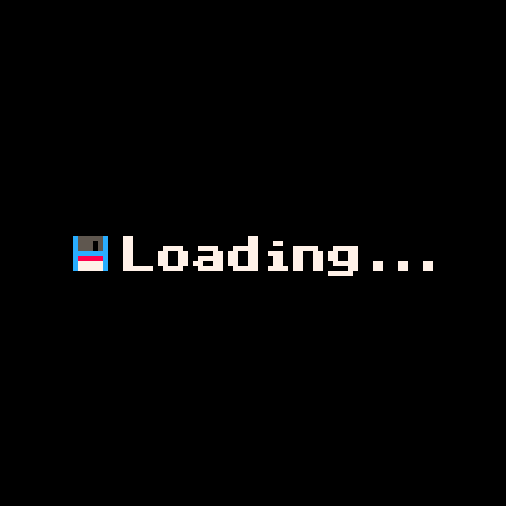
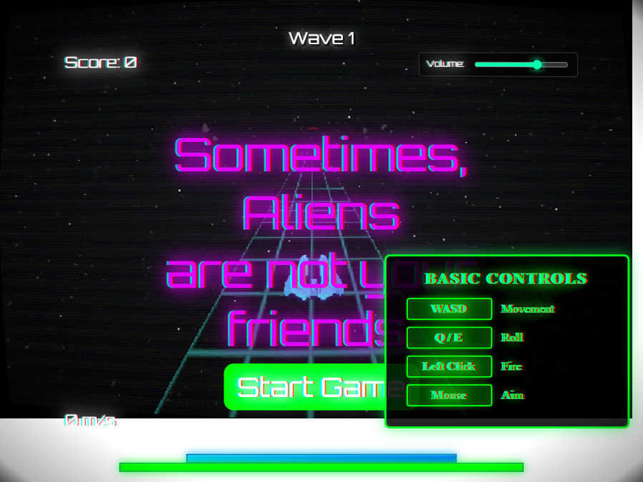

AIDAN MARK / PERSONAL FILES EDMONTON, AB / EST. ON THE WEB
A / M : : SOMETIMES ALIENS ARE NOT YOUR FRIENDS
[ home / projects / resume / e-mail ] * no scripts here *
[ << project drawer ] [ < previous ] [ next > ]
FILE 03 / 08 : : BROWSER GAME / OPEN THE ARCADE CABINET
. * . * . o .
[ INSERT CURIOSITY TO CONTINUE ]

solo game / JavaScript, WebGL2, GLSL
A 3D game in the browser built without a game engine. It has handwritten shaders, OBJ loading, a scene and camera system, object pooling, spatial-hash collisions, frustum culling, and a light budget.

The actual game start screen, captured from the playable deployment.
More: all projects / technical background / email Aidan
* * * * *
home / all the projects / résumé / write me
Last edited: 22 October 2026.
Made from ordinary HTML, old-fashioned CSS, and original project pictures. © Aidan Mark.